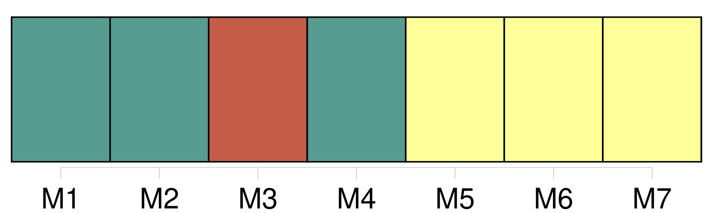
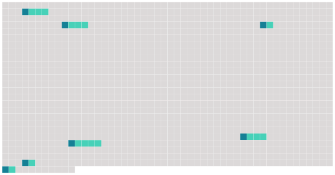

Longueur nb maillons : 7 mentions |
  |
Article 22
Article 23 [28 phrases]
Sans préjudice des dispositions du paragraphe 1, les décisions, les recommandations et les autres accords adoptés en application de la convention d'Oslo ou de la convention de Paris continuent d'être applicables et conservent le même caractère juridique, dans la mesure où ils sont compatibles avec la convention ou ne sont pas explicitement abrogés par celle -ci, par toute décision ou, dans le cas des recommandations existantes, par toute recommandation adoptée en [application de celle -ci] [1 phrases]
Tout différend entre des parties contractantes relatif à l'interprétation ou à [l'application de la convention] , et qui n'aura pu être réglé par les parties au différend par un autre moyen tel que l'enquête ou une conciliation au sein de la Commission, est, à la requête de l'une de ces parties contractantes, soumis à arbitrage dans les conditions fixées au présent article. [4 phrases]
La requête d'arbitrage indique l'objet de la requête, y compris notamment les articles de la convention, dont l'interprétation ou [l'application] sont objets du différend. b ) La partie requérante informe la Commission du fait qu'elle a demandé la constitution d'un tribunal arbitral, du nom de l'autre partie au différend ainsi que des articles de la convention dont l'interprétation ou [l'application] sont à son avis l'objet du différend. |
 |
La ressource peut être téléchargée sur la page Ortolang
Si vous avez des questions ou vous voyez des erreurs, merci d'envoyer un mail à silvia.federzoni89@gmail.com
Site développé par S. Federzoni (contact)